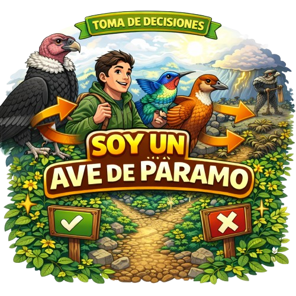

Soy un ave
Un viaje educativo por el ecosistema altoandino colombiano
🎯 Tu misión:
Recorrer 25 estaciones tomando decisiones como diferentes aves del páramo. Cada elección afecta la supervivencia de las especies y el equilibrio del ecosistema.
- 5 aves diferentes - cada una con sus propios desafíos
- 25 estaciones - decisiones basadas en ecología real
- Aprende sobre: alimentación, hábitat, adaptaciones, aportes ecológicos y amenazas
Proyecto educativo - Guardianes del Páramo
Estación 1 de 25
Puntos: 0/25
Nombre del Ave
Nombre científico
Descripción del ave
Puntaje actual con esta ave: 0/5
Situación de la estación
¿Qué decides hacer?
Título
Texto de retroalimentación
Título del resultado
0/25
Puntos totales
📊 Detalle por especie:
0 de 5 aves lograron sobrevivir gracias a tus decisiones.
"Ser Guardián del Páramo no es solo conocer sus especies, es decidir correctamente para proteger la vida que sostiene el ecosistema."